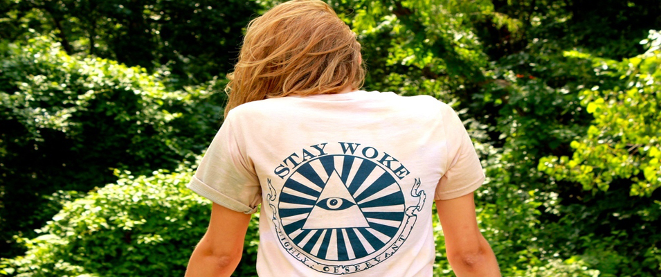
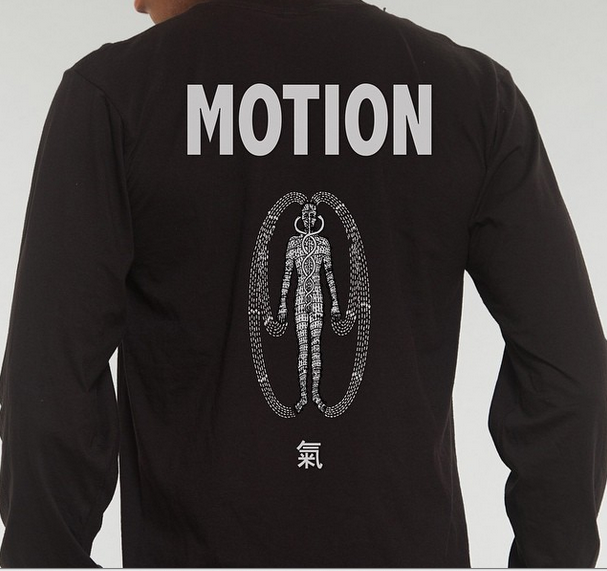

Highly Observant
Tre’Lan Tillman, creator and founder of the Tulsa, Oklahoma based t-shirt line Highly Observant, woke up one day with a dream and a mission. Tired of the fluff of and frills that came with a traditional job, he decided to change his life, and perhaps the lives of a few artists along the way. Pouring his savings and his heart into building his brainchild, he gives a new definition to the idea of a blank slate. Artists are invited to showcase their designs, and even their doodles with Tillman’s t-shirt company as the canvas, and in return are paid cold hard cash in return for their designs.
In this day and age, where more and more artists are seeking an outlet or platform to showcase their work outside of the “traditional gallery” setting, companies like this one offer a fresh and fashionable way to get your work seen by many. There’s something tangible about having your art on a t-shirt, or purchasing an artist’s work in that form, It’s actual wearable art.amfm: How and why did you want to start your own T-shirt line? You said you were tired of the conventional and just woke up one day and bought a bunch of shirts?
highly observant: I had been looking for post school work, and one day I really came to realize what the "All American 9 to 5 Special" entailed for me personally: desks, per diem, bummers, complacency, and uniformity. NO chance to make an impact, really make changes in peoples lives. Couldn't lead that life without TRUE opportunity, y'know? It’s just not in me. So after a few days deliberating life decisions with my dog, I scrambled to my savings and ordered a few hundred variously colored tees. Called up my main man Julian about some ideas, and the inspiration just keeps rollin'.
amfm: Why did you want to design your line around the idea of promoting artists and having them submit their work for designs? How do you find them and and work together with them?
highly observant: Why feast in front of the world when we can all eat together? I can't name an artist who wants to punch in and out on a time clock and be told what to be everyday. So why not attempt to create a solution? All I ask is to see is a portfolio and a few doodles. I see what their style is like, get mad inspired by it, give em a vague description of what I'd like to see, and tell 'em to shoot me a doodle of it on their own terms and offer cash. Sometimes we get back some fuego, other times nothing. Lowkey being active within the community at large, just talking with the artistic homies about their inspirations, and social media have become a great deal of help when it comes to discovering new artists. Straight detective work.
amfm: What is the significance of the name Highly Observant? What does that mean to you? Does it have anything to do with the "stay woke" design?
highly observant: The name Highly Observant itself is nothing more than a title. But to me Highly Observant means to be susceptible to true inspiration, which is well, everything, the world is a mad fu***n beautiful place. Too many people forget that.
amfm: How has business been growing in Tulsa? Do you guys operate mostly online or are you guys present in the community as well?
highly observant: Tulsa is a growing market, We're seeing more and more and more kids outta Wranglers tight pants and ten gallon hats and into ASOS joggers and supreme buckets, I love it! Business has been growing, I really dig interacting with the people, so we do a good bit of tabling at community events, as well as music festivals! Stoked to break out some new moves and make new homies. Still gotta step up our online sales game.
amfm: Have you always had an interest in art and fashion? Have you always wanted to start your own business or line?
highly observant: I've always got physical vibes from the arts, any sort, like its my only REAL feel, y'know? I haven't always wanted to start my own line or business, but I have always wanted to create. Create opportunity for others, and have work that is ever evolving, challenging, full of madness and passion. I wanted make print magazine ads or be a monster truck rally announcer. Making shirts isn't turning out too bad though.
amfm: What is one thing you would like people to know about your brand?
highly observant: It’s all about enjoying yourself. We just wanna make the most dope, comfortable things to do that in. Got eye opening art? Wanna make a dope shirt? So do we. Contact us.
|  |  |
For more from Coco and Breezy:
Highly Observant's Website
Highly Observant on Instagram
photo credits: highly observant